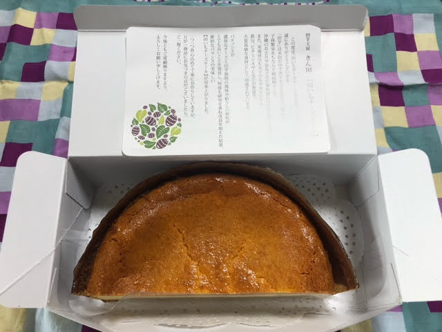
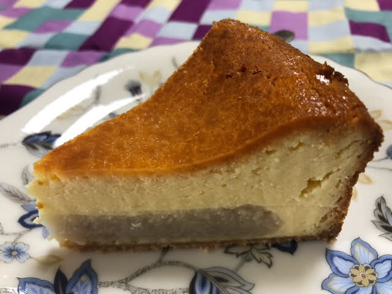

2024/06/27 田芋チーズケーキ
本日はお中元に千葉の友人に送ったら喜ばれた逸品をご紹介。
田芋の独特なお味と濃厚チーズのコラボが絶妙！
那覇の新都心にある「田芋工房」さんの田芋チーズケーキです。
（ホールサイズ以外にハーフサイズ、1ピースカットもあります。）
田芋の独特なお味と濃厚チーズのコラボが絶妙！
那覇の新都心にある「田芋工房」さんの田芋チーズケーキです。
（ホールサイズ以外にハーフサイズ、1ピースカットもあります。）
ハーフはこちら（ホールのハーフサイズです）

1ピースはこちら

機会がありましたらぜひご賞味ください😋。